Diversos cães estão neste momento em nossa organização esperando por um novo lar, um novo amigo e uma nova família. Conheça nossos amiguinhos de quatro patas, seu mais novo amigo pode estar mais perto do que você imagina.
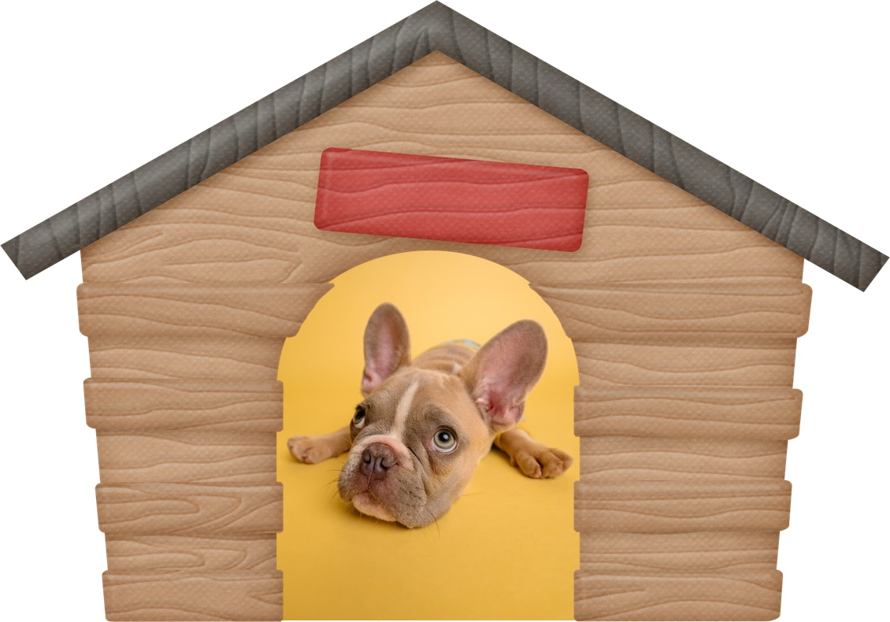
Ben - Gosta de longas horas de sono, busca alguém que possa dormir com ele.
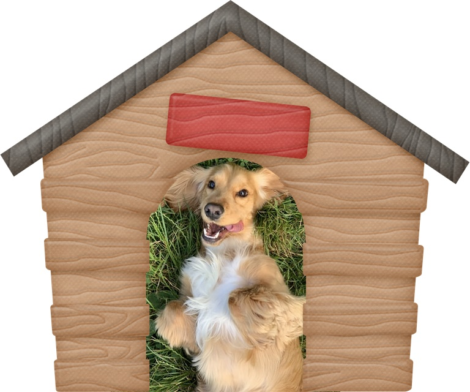
Lily - É muito brincalhona e gosta de correr, então precisa de um espaço para isso. Procura alguém que jogue bolinha para ela ir buscar.
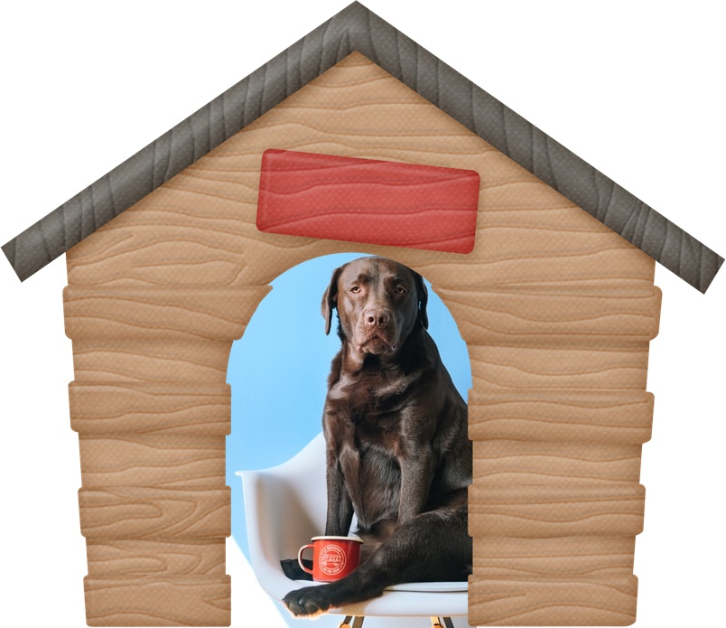
Toby - Gosta muito de companhia e quer um amigo que possa estar ao lado dele independente do que estiver fazendo.
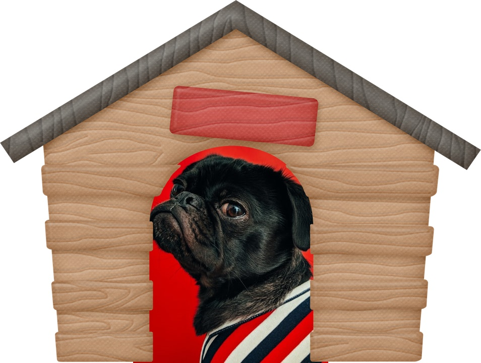
Arnold - Gosta de ter atenção e quer uma pessoa que o mime e o dê muito carinho e roupas.
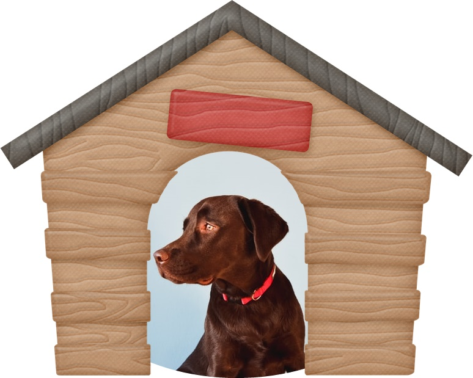
Brian - Gosta de longos passeios e de estar conectado a natureza, quer um campanheiro que curta aventuras e belas paisagens.
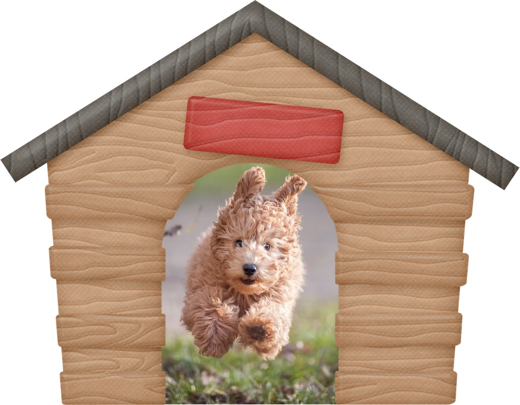
Morgana - Muito arteira e gosta de uma bagunça, procura um dono que a ame e goste de brincar com ela.Bud - Quer um dono que goste de correr com ele e que durma com ele.
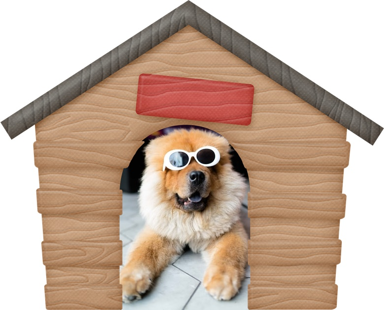
Costelinha - Gosta de relaxar no sol e deitar no chão gelado, procura um dono carinhoso e que dê água geladinha para ele.
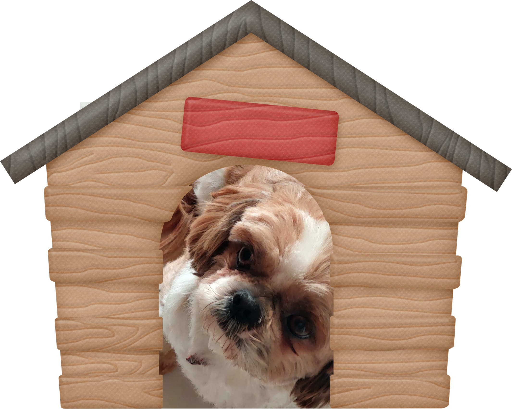
Gaya - Gosta de sempre estar presente, quer um dono que consiga acompanhar e dar muito carinho.
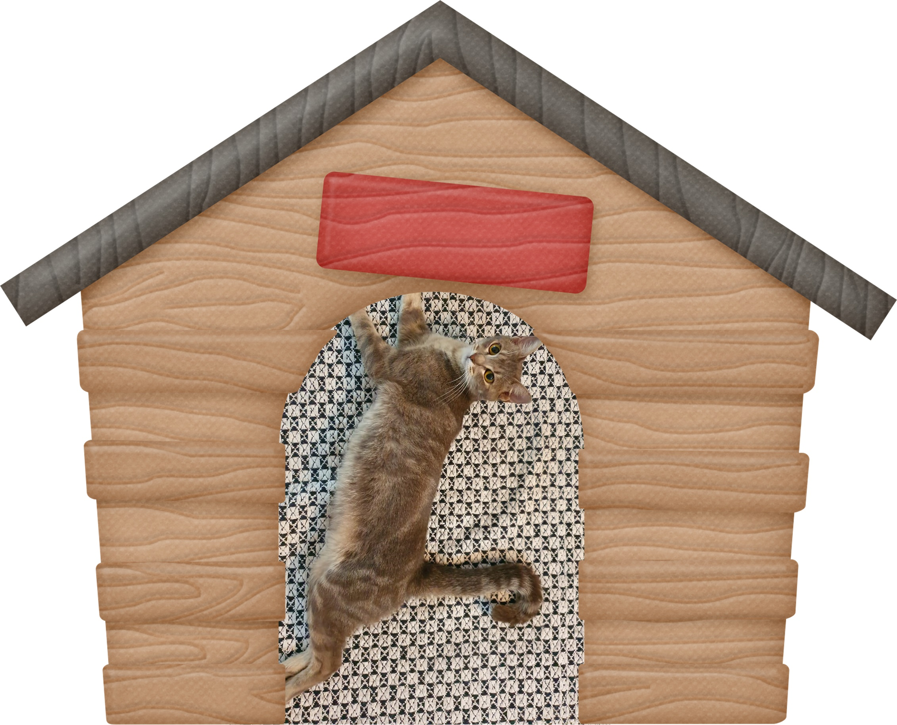
Sherlock - Gosta de demonstar o amor dele com mordidinhas e é muito brincalhão. Quer um dono que seja paciente e brinque com ele.
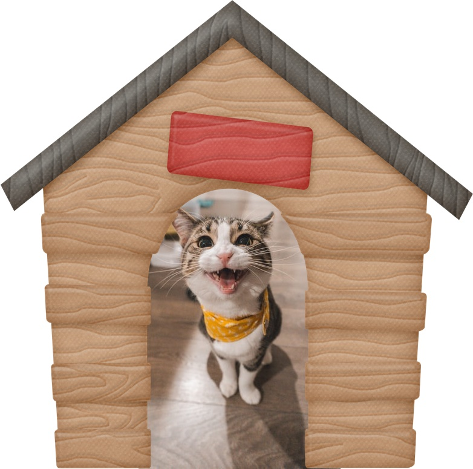
Liza - Gosta de receber atenção e quer participar ativamente da vida de seu dono. Quer um dono que a dê atenção e converse com ela.
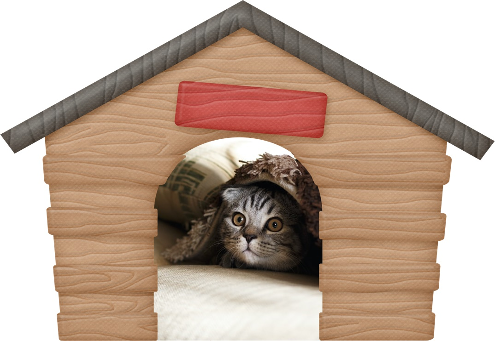
Perdigoto - É muito medroso e reservado. Quer um dono que o deixe confortável e que dê a ele muito amor.
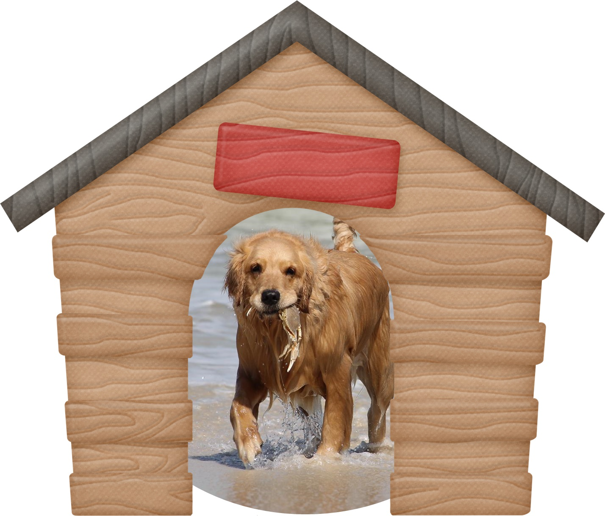
Chewbacca - Gosta de ter dar presentes e é muito comunicativo. Quer um dono que consiga entende-lo e faze-lo se sentir bem.
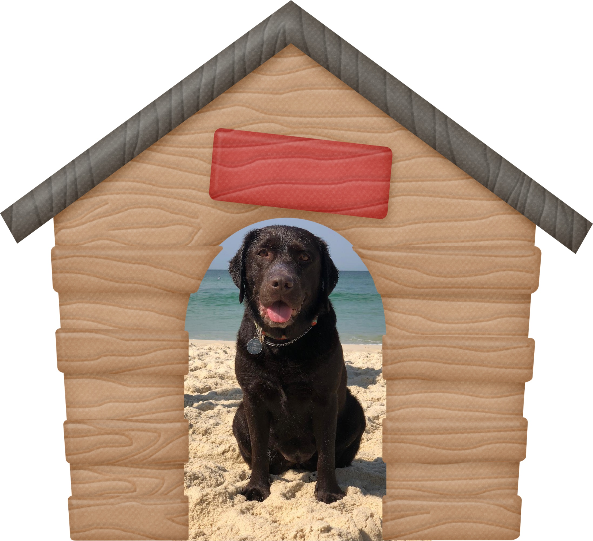
Café - Ama praias e pegar um sol para ele é essencial, quer um amigo que consigo leva-lo a lugares que ele possa se banhar.